Data Specialist & Project Coordinator - AI & Analytics
B.Sc. in Industrial Engineering & Management
Projects
AI Movie Recommender Platform (RAG)
An AI-powered movie recommendation platform designed to decode natural language user requests. By combining semantic search with lexical precision, the system ensures that users find the exact movie they are looking for.
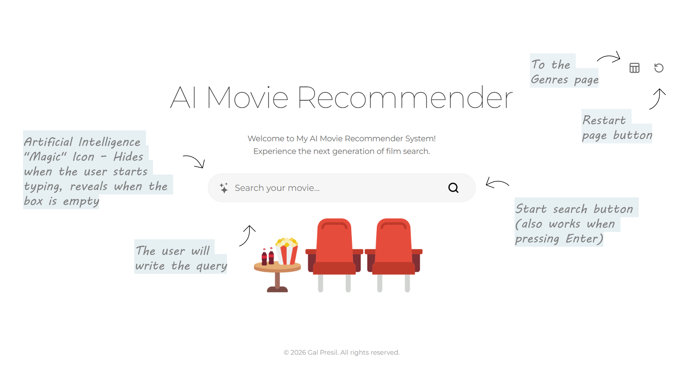
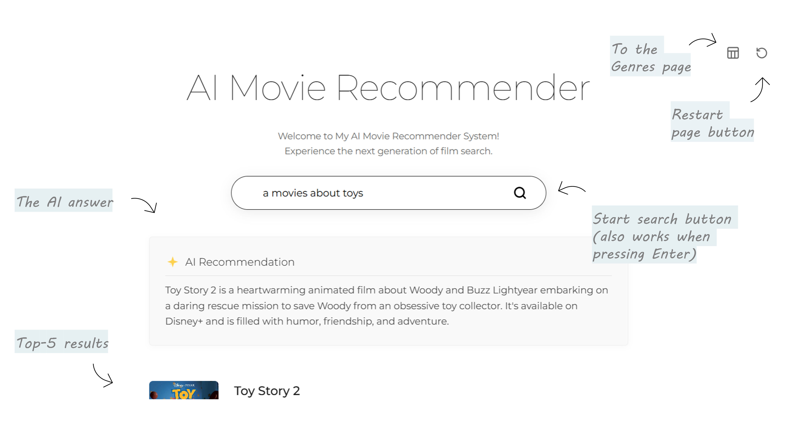
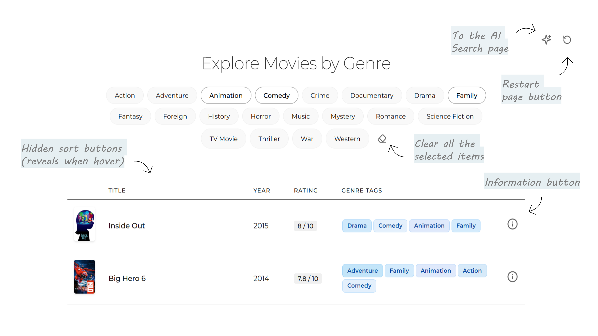
Sentiment Detection System Using Machine Learning
The project aims to enhance public transportation by analyzing customer sentiment from social media, including developing a website, NLP algorithms, and building a dynamic dashboard.
First place in Afeka’s final project competition.
HR Dashboard with Power BI
Creating a three-page HR dashboard in Power BI to enhance employee recruitment, satisfaction, and retention.
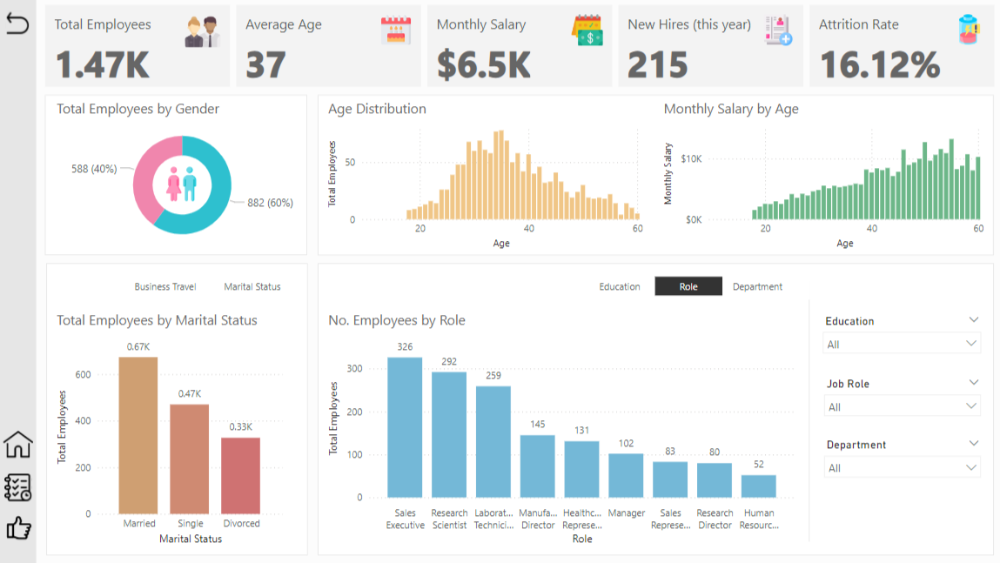
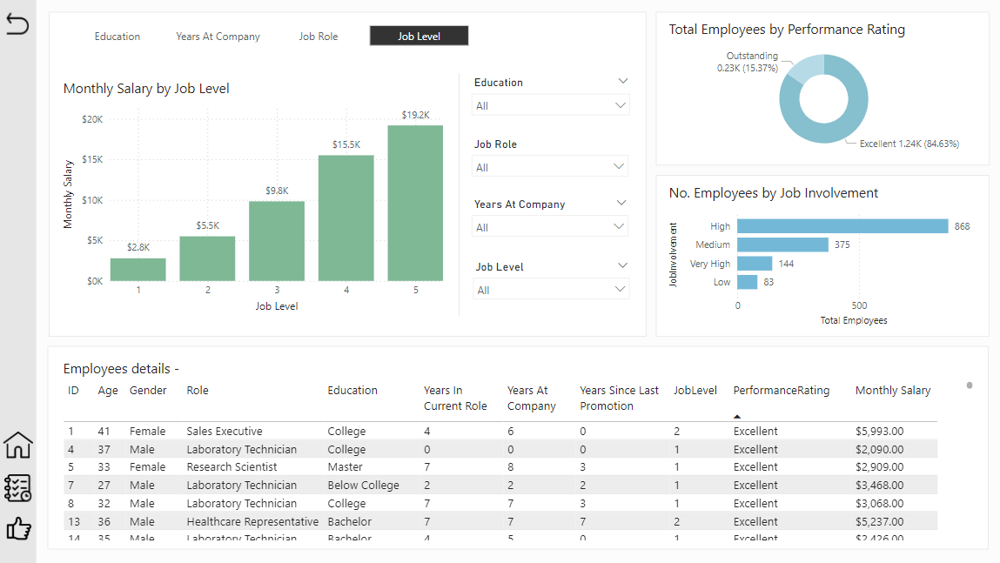
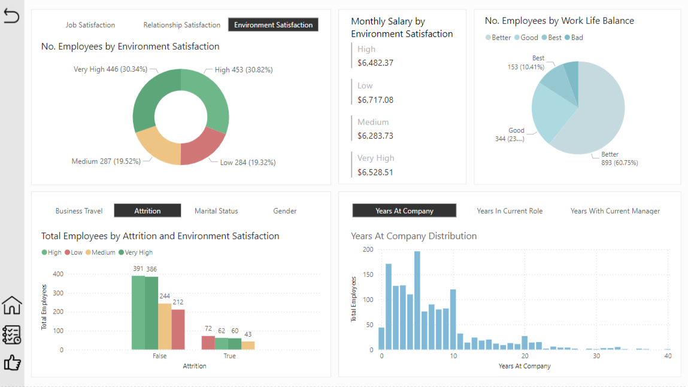
Sales Dashboard & Search Form with Excel
This project involves creating a dynamic sales dashboard and search form in Excel to provide a comprehensive data overview and simplify business management.
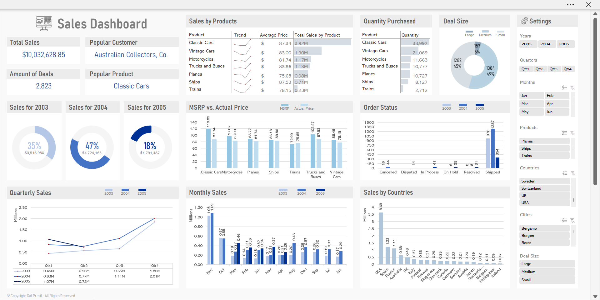
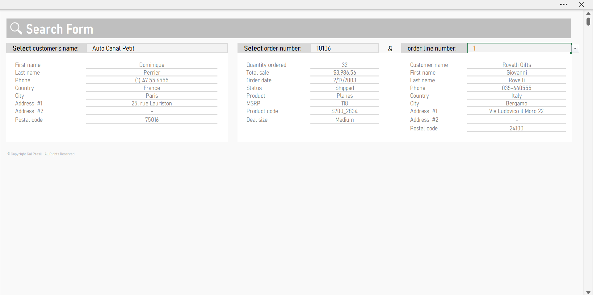
Interactive Image Bingo Game
A dynamic, web-based Bingo game that lets you upload custom images, generate printable cards, and host interactive games. 🎉 Let’s play »
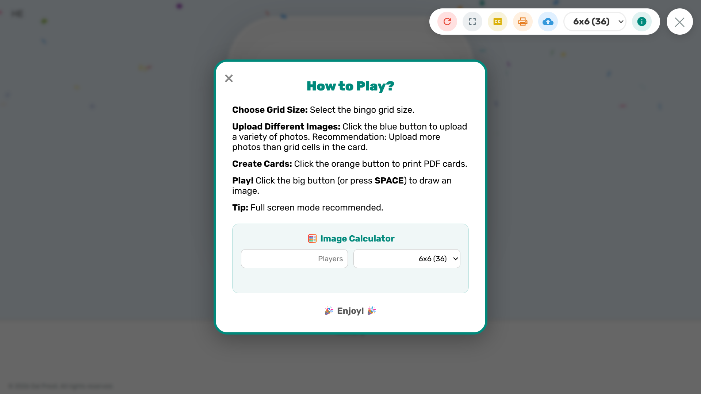
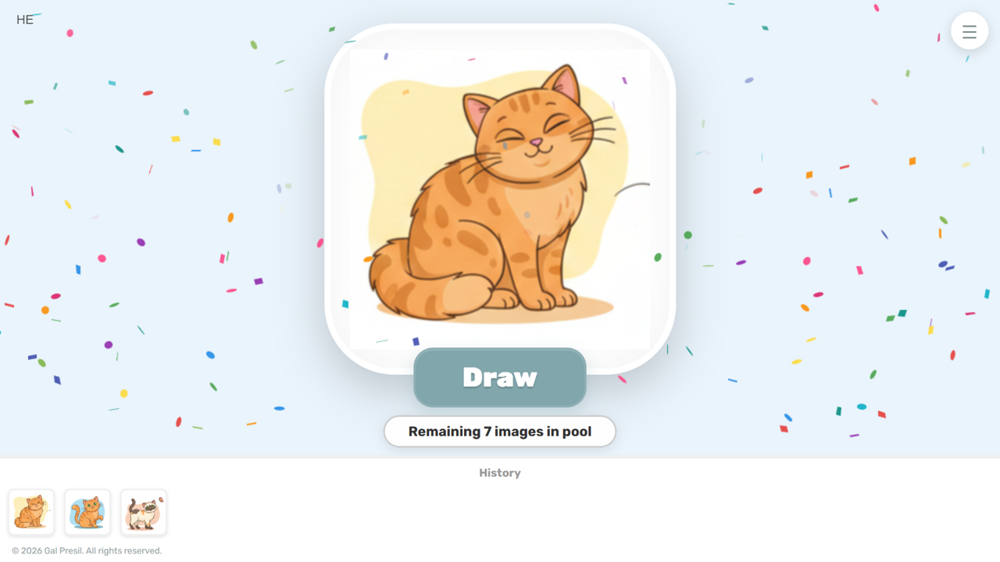
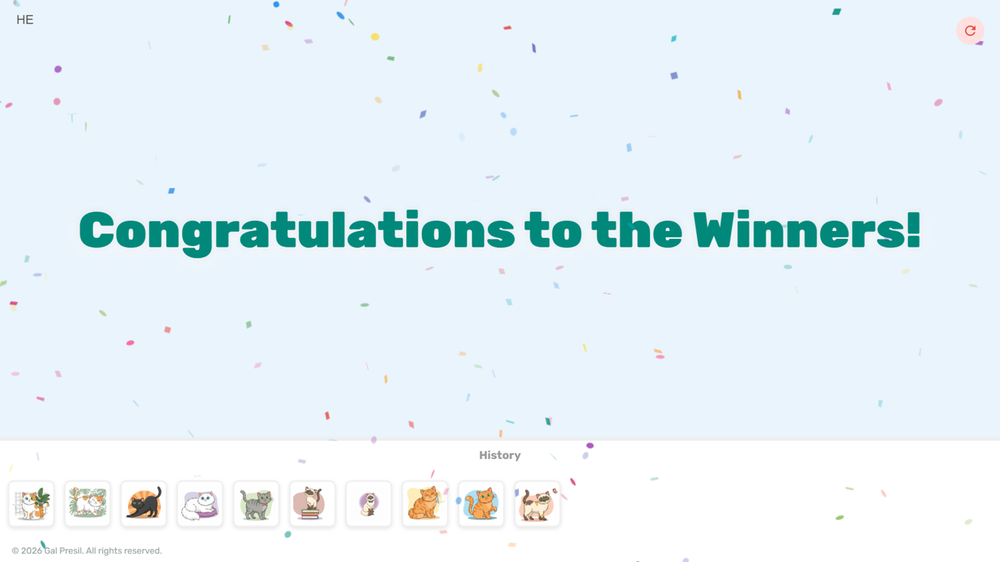
Experience
Project Coordinator
- Organizing data and activities for efficient decision-making and business insights.
- Implementing and maintaining information management systems and access controls.
- Leading cross-organizational projects and driving process improvements.
- Integrating AI tools into organizational workflows.
- Data management
- process improvement
- Project leadership
- Organizational Consulting
Senior IT Manager & Team Leader
- Overseeing and coordinating IT activities and projects.
- Analyzing processes and events for improvement and documentation.
- Providing user support and implementing communication networks.
- Management of the staff members' learning program.
- Certificate of Excellence in Reserve Duty from the Unit Commander (2024).
- Management
- User Support
- networks Configuration
- Technical Documentation
- Problem Solving
IT Manager
- Installation and configuration of communication networks and systems.
- Providing technical support and user management.
- Certificate of Excellence from the Navy Commander (2018).
- Systems Configuration
- Technical Support
- Windows
- Linux
- Active Directory
- CRM
- Teamwork
Education
B.Sc. Industrial Engineering & Management
Higher Education, AI Engineering Program
An advanced data science program focused on practical applications of machine learning, generative AI, and LLMs.